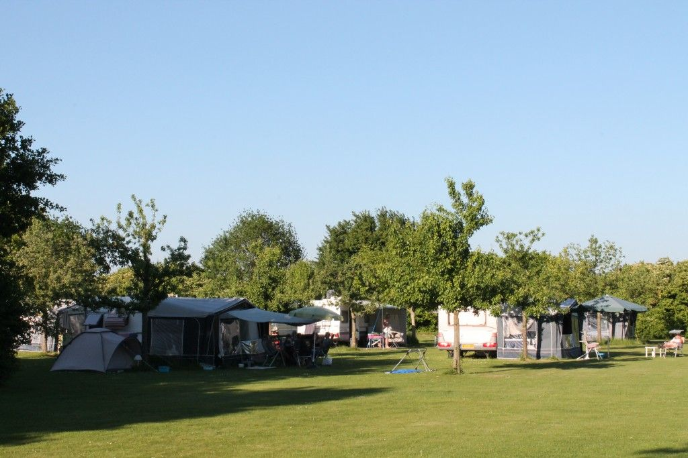
Kampeerplaatsen
Ruime plaatsen tot 350 m², allemaal met stroom. Omringd door ons eigen natuurgebied.
vanaf € 28,50 p.n.Meer info
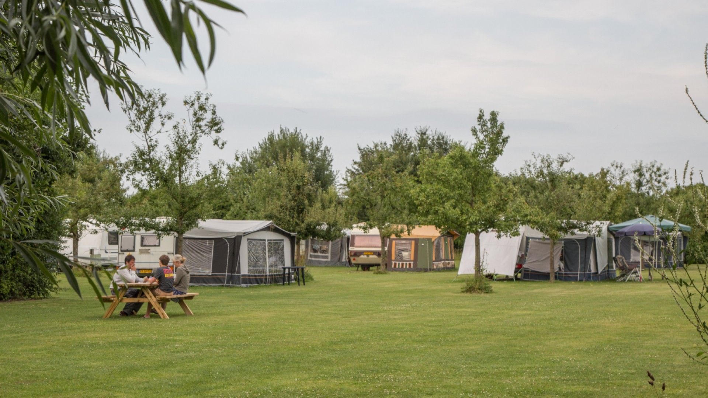
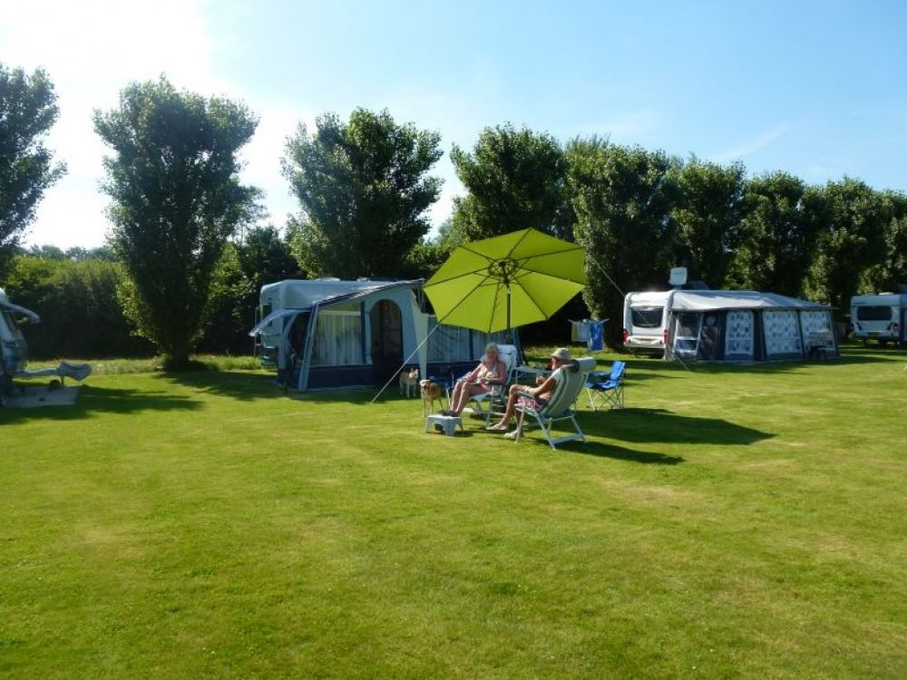
Kamperen op de voormalige boerderij van onze familie in Poortvliet, op plaatsen tot 350 m², met een eigen natuurgebied en een kruidentuin met zo'n 500 kruiden.
75 zeer ruime kampeerplaatsen, plekken voor campers en twee chalets, midden in het groen. Van 1 april tot en met september.

Ruime plaatsen tot 350 m², allemaal met stroom. Omringd door ons eigen natuurgebied.
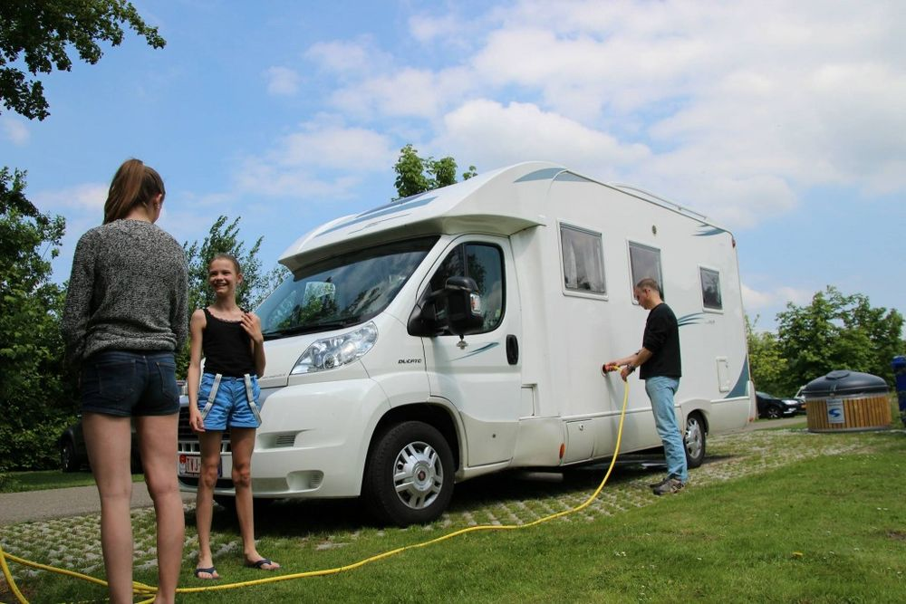
Op gras of verhard terrein, ook voor grotere campers en bussen. Met een gratis serviceplaats.
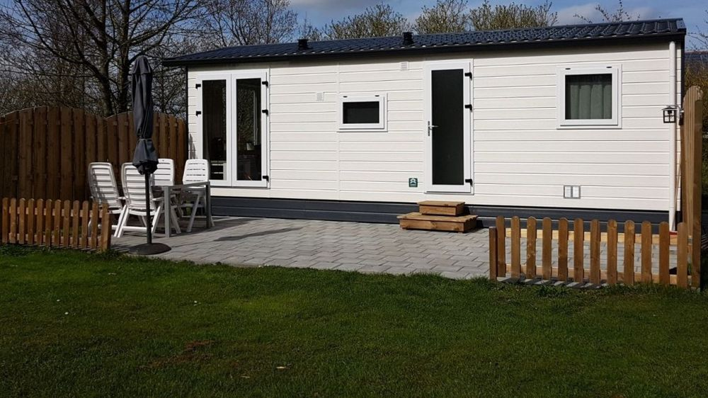
Comfortabele chalets voor 2 à 3 personen, naast het natuurgebied en de kruidentuin.
Rondom de kampeervelden ligt ons eigen natuurgebied van zo'n 8 hectare, met een waterpoel, een slenk, een boomgaard, vogelrijk grasland en een vliedberg. Direct buiten de camping begint de polder, en de Oosterschelde ligt op steenworp afstand.
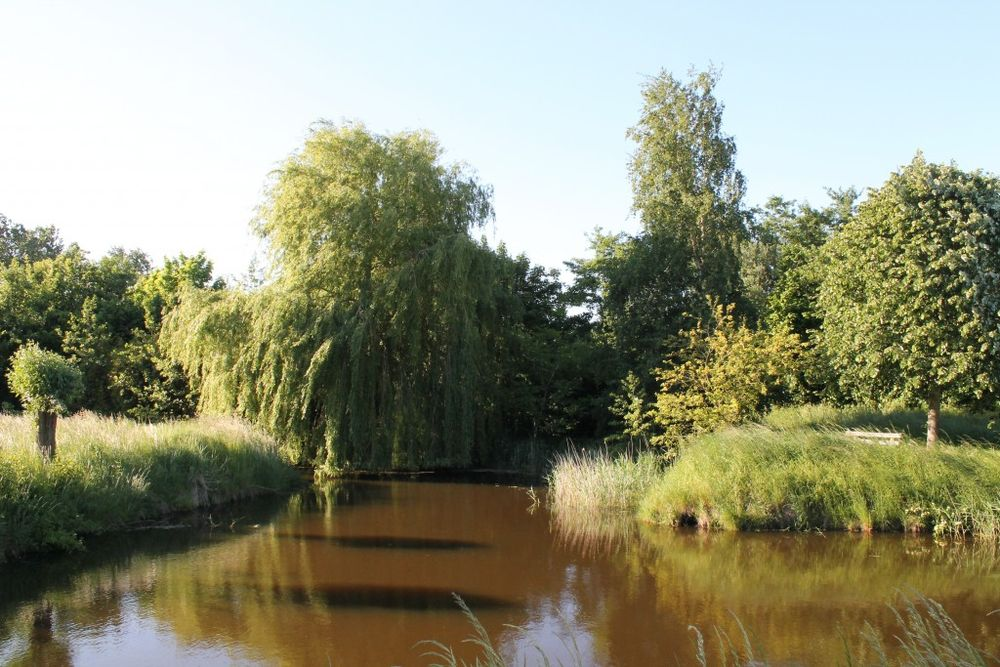
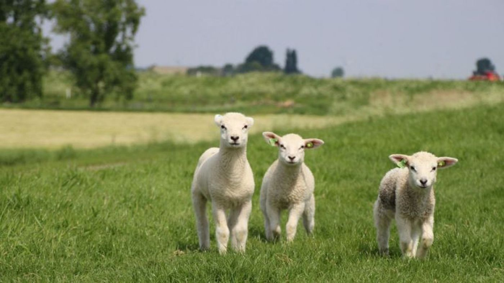
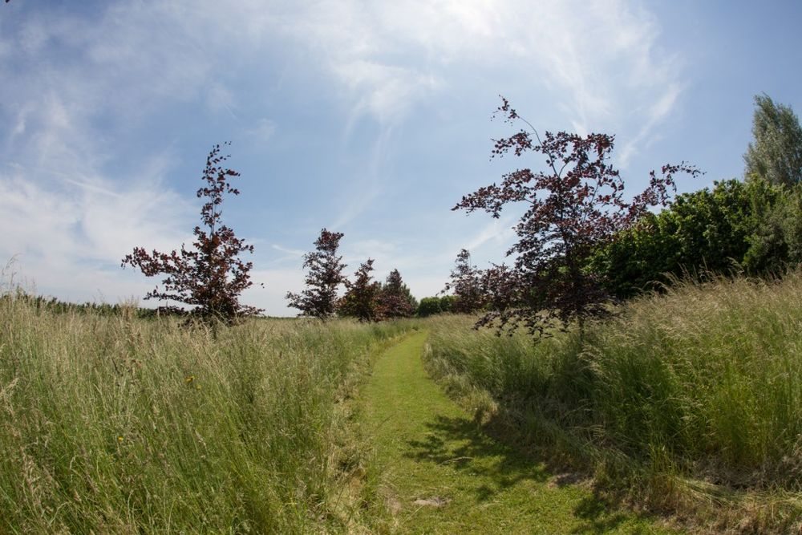
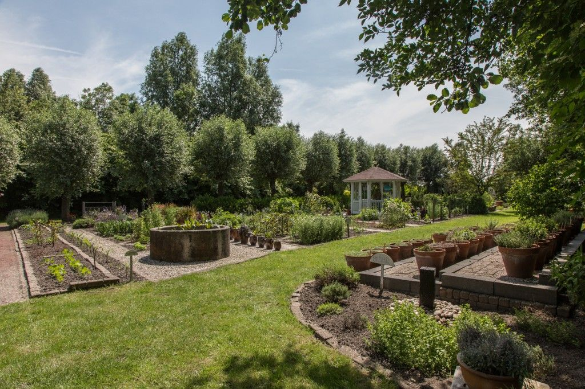
In 2000 begonnen we met ongeveer 35 keukenkruiden voor onze kampeerders. Inmiddels staan er zo'n 500 in- en uitheemse keuken- en medicinale kruiden, 50 soorten vergeten groenten en een vijftigtal exotische planten. Veel kruiden kweken we zelf op.
Van 1 mei tot 1 september verzorgen we rondleidingen, waarbij u diverse keukenkruiden kunt proeven.
Voor kampeerders, maar net zo goed voor fietsers en dagjesmensen op het eiland.
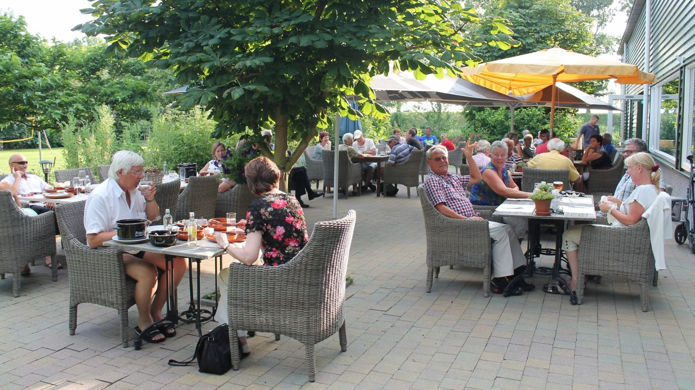
Lekker eten voor een vriendelijke prijs, met een wisselende menukaart en een riant terras op het zuiden. Ook voor catering.
Graag vooraf reserveren: 06 29 46 99 66
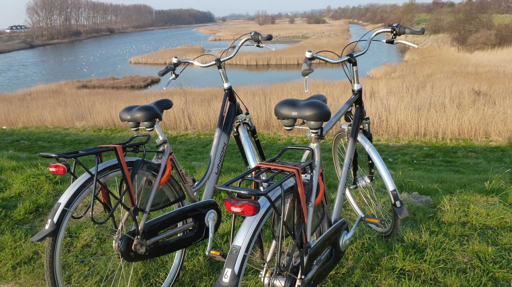
Gewone en elektrische fietsen, kinderfietsen, zitjes en fietskarren. Tholen is een fietseiland bij uitstek.
Fiets € 14 · e-bike € 25 per dag
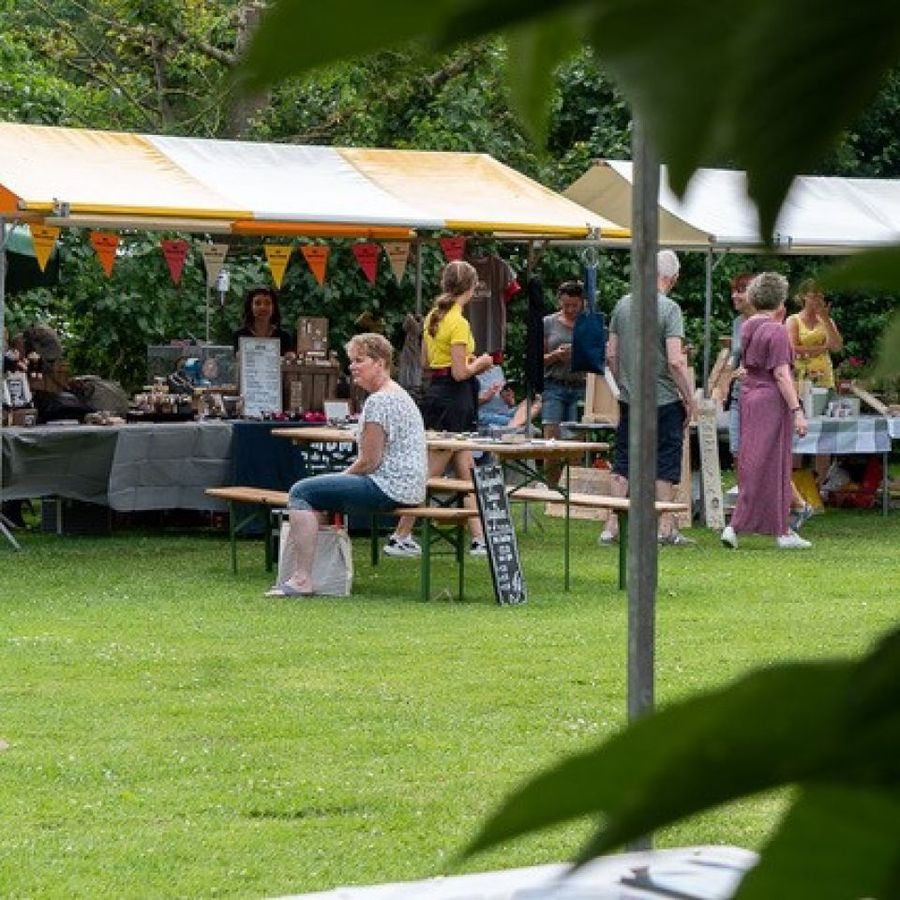
Eén dag per jaar een podium en verkoopplek voor kunstenaars, creatievelingen en verzamelaars, met kramen op het gras en mini-workshops.
Gratis entree · 10.30 – 17.00 uur
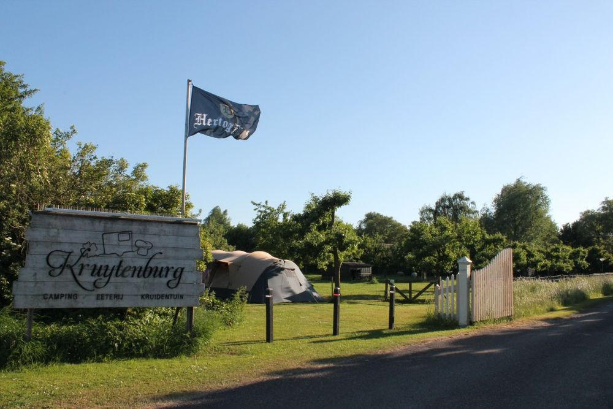
Kruytenburg was een hofstede aan de Krijtenburgsedijk, voor het eerst genoemd in 1764. Sinds 1838 is de boerderij van de familie Van Nieuwenhuijzen. In 2001 mochten de eerste kampeerders hier 'kamperen bij de boer'.
Er is inmiddels van alles te beleven, maar we doen er alles aan om de rust en de sfeer van de oude boerderij te bewaren.
Boek uw plaats of chalet online, of bel gerust met uw vraag.
Kies uw data en zie direct welke kampeerplaatsen, camperplaatsen en chalets er vrij zijn.